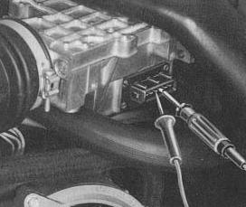

Intake air sensor defective
- Pull connector off air intake sensor
- connect ohmmeter to terminals 6 and 9 on intake air sensor
(resistance 200 to 400 ohms)
- Then check at terminals 7 and 8
(resistance 120 to 200 ohms).

Readings as specified
Readings outside tolerances